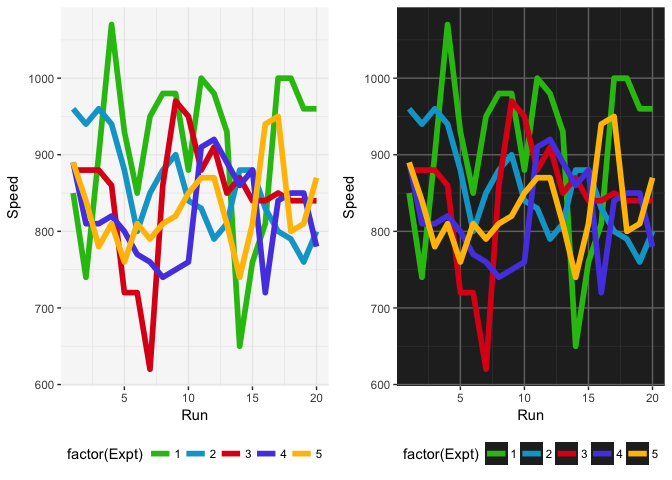
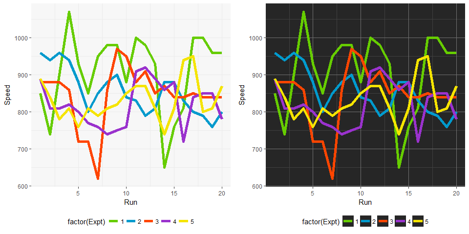
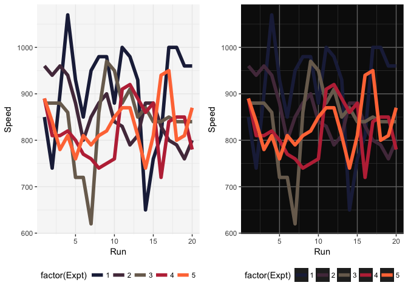
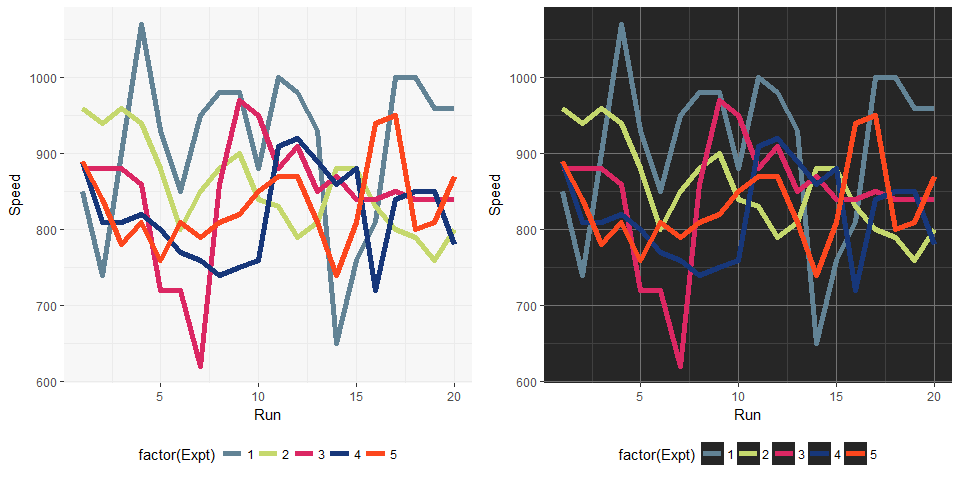
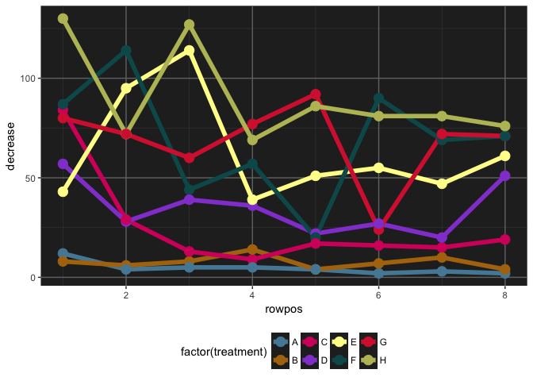
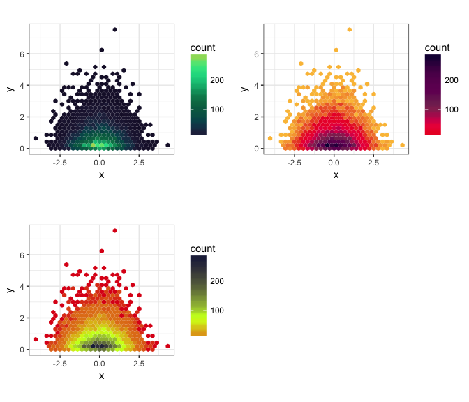
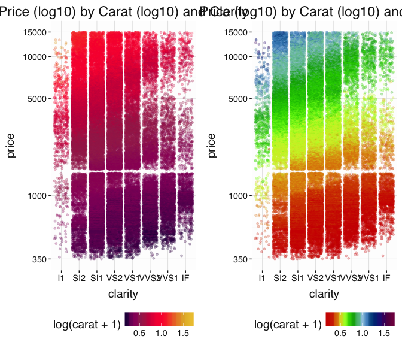

jcolors contains a selection of ggplot2 color palettes that I like (or can at least tolerate to some degree)
Installation
Install jcolors from GitHub:
install.packages("devtools")
devtools::install_github("jaredhuling/jcolors")Access the jcolors color palettes with jcolors():
library(jcolors)
jcolors('default')## kelly_green rich_electric_blue maximum_red
## "#29BF12" "#00A5CF" "#DE1A1A"
## majorelle_blue fluorescent_orange
## "#574AE2" "#FFBF00"Discrete Color Palettes
Use with ggplot2
Now use scale_color_jcolors() with ggplot2:
library(ggplot2)
library(gridExtra)
data(morley)
pltl <- ggplot(data = morley, aes(x = Run, y = Speed,
group = factor(Expt),
colour = factor(Expt))) +
geom_line(size = 2) +
theme_bw() +
theme(panel.background = element_rect(fill = "grey97"),
panel.border = element_blank(),
legend.position = "bottom")
pltd <- ggplot(data = morley, aes(x = Run, y = Speed,
group = factor(Expt),
colour = factor(Expt))) +
geom_line(size = 2) +
theme_bw() +
theme(panel.background = element_rect(fill = "grey15"),
legend.key = element_rect(fill = "grey15"),
panel.border = element_blank(),
panel.grid.major = element_line(color = "grey45"),
panel.grid.minor = element_line(color = "grey25"),
legend.position = "bottom")
grid.arrange(pltl + scale_color_jcolors(palette = "default"),
pltd + scale_color_jcolors(palette = "default"), ncol = 2)
grid.arrange(pltl + scale_color_jcolors(palette = "pal2"),
pltd + scale_color_jcolors(palette = "pal2"), ncol = 2)
Color palettes can be displayed using display_jcolors()


More example plots
grid.arrange(pltl + scale_color_jcolors(palette = "pal3"),
pltd + scale_color_jcolors(palette = "pal3"), ncol = 2)
grid.arrange(pltl + scale_color_jcolors(palette = "pal4"),
pltd + scale_color_jcolors(palette = "pal4") +
theme(panel.background = element_rect(fill = "grey5")), ncol = 2)
grid.arrange(pltl + scale_color_jcolors(palette = "pal5"),
pltd + scale_color_jcolors(palette = "pal5"), ncol = 2)
pltd <- ggplot(data = OrchardSprays, aes(x = rowpos, y = decrease,
group = factor(treatment),
colour = factor(treatment))) +
geom_line(size = 2) +
geom_point(size = 4) +
theme_bw() +
theme(panel.background = element_rect(fill = "grey15"),
legend.key = element_rect(fill = "grey15"),
panel.border = element_blank(),
panel.grid.major = element_line(color = "grey45"),
panel.grid.minor = element_line(color = "grey25"),
legend.position = "bottom")
pltd + scale_color_jcolors(palette = "pal6")
Continuous Color Palettes
Use with ggplot2
set.seed(42)
plt <- ggplot(data.frame(x = rnorm(10000), y = rexp(10000, 1.5)), aes(x = x, y = y)) +
geom_hex() + coord_fixed() + theme(legend.position = "bottom")
plt2 <- plt + scale_fill_jcolors_contin("pal2", bias = 1.75) + theme_bw()
plt3 <- plt + scale_fill_jcolors_contin("pal3", reverse = TRUE, bias = 2.25) + theme_bw()
plt4 <- plt + scale_fill_jcolors_contin("pal12", reverse = TRUE, bias = 2) + theme_bw()
grid.arrange(plt2, plt3, plt4, ncol = 2)
ggplot2 themes
library(scales)
p1 <- ggplot(aes(x = carat, y = price), data = diamonds) +
geom_point(alpha = 0.5, size = 1, aes(color = clarity)) +
scale_x_continuous(trans = log10_trans(), limits = c(0.2, 3),
breaks = c(0.2, 0.5, 1, 2, 3)) +
scale_y_continuous(trans = log10_trans(), limits = c(350, 15000),
breaks = c(350, 1000, 5000, 10000, 15000)) +
ggtitle('Price (log10) by Carat (log10) and Clarity') +
scale_color_jcolors("rainbow") +
theme_light_bg()
p2 <- ggplot(aes(x = carat, y = price), data = diamonds) +
geom_point(alpha = 0.5, size = 1, aes(color = cut)) +
scale_x_continuous(trans = log10_trans(), limits = c(0.2, 3),
breaks = c(0.2, 0.5, 1, 2, 3)) +
scale_y_continuous(trans = log10_trans(), limits = c(350, 15000),
breaks = c(350, 1000, 5000, 10000, 15000)) +
ggtitle('Price (log10) by Carat (log10) and Cut') +
scale_color_jcolors("pal4") +
theme_light_bg()
grid.arrange(p1, p2, ncol = 2)
p1 <- ggplot(aes(x = clarity, y = price), data = diamonds) +
geom_point(alpha = 0.25, size = 1, position = "jitter", aes(color = log(carat + 1))) +
scale_y_continuous(trans = log10_trans(), limits = c(350, 15000),
breaks = c(350, 1000, 5000, 10000, 15000)) +
ggtitle('Price (log10) by Carat (log10) and Clarity')
p2 <- ggplot(aes(x = clarity, y = price), data = diamonds) +
geom_point(alpha = 0.25, size = 1, position = "jitter", aes(color = log(carat + 1))) +
scale_y_continuous(trans = log10_trans(), limits = c(350, 15000),
breaks = c(350, 1000, 5000, 10000, 15000)) +
ggtitle('Price (log10) by Carat (log10) and Clarity')
grid.arrange(p1 + scale_color_jcolors_contin("pal3", bias = 1.75) + theme_light_bg(),
p2 + scale_color_jcolors_contin("rainbow") + theme_light_bg(), ncol = 2)
If the background here were dark, then this would look nice:
grid.arrange(p1 + scale_color_jcolors_contin("pal3", bias = 1.75) + theme_dark_bg(),
p2 + scale_color_jcolors_contin("rainbow") + theme_dark_bg(), ncol = 2)